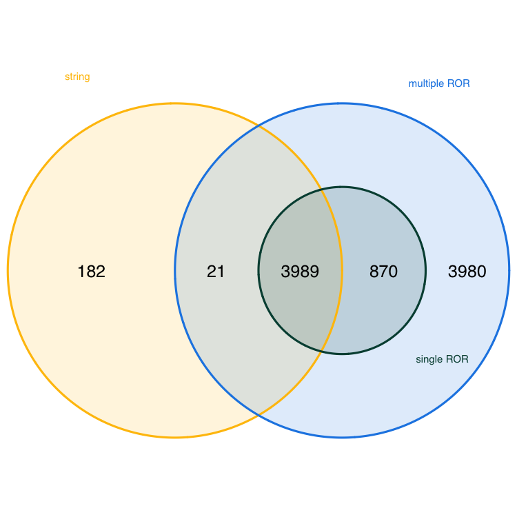

Affiliation search using ROR IDs
Dorothea Strecker ![]()
Sophia Dörner
This notebook serves as a tool for librarians and information professionals monitoring their institution’s publication output. It compares ROR-based versus string-based search strategies in OpenAlex for retrieving publication data with R, accounting for institutional hierarchies (parent institutions and their child/related institutions) and demonstrating differences in publication coverage. No software installation or prior programming knowledge required. If you have suggestions or notice any mistakes, please open an issue.
Introduction
In one of the notebooks we have published, we outlined how library and information professionals can use OpenAlex for monitoring the Open Access publication output at their institution. That notebook uses ROR IDs to identify publications of the institution in OpenAlex. However, this approach has limitations. In this notebook, we want to explore the case of institutions associated with multiple ROR IDs and the potential matching problems that can arise when using a ROR ID-based search strategy.
ROR IDs are persistent identifiers for research organizations. As such, they uniquely identify organizations with each ROR record gathering name variants, e.g. language variants or acronyms (see for example the ROR record of the University of Göttingen). A ROR-based search strategy thus brings the advantage that the search is less prone to be affected by spelling variants or errors of organizational names. In contrast, a string-based search strategy can more likely result in false positives, e.g. when searching for display names. Furthermore, ROR IDs are strongly integrated into OpenAlex, as all institutions in OpenAlex are assigned ROR IDs.
Sometimes, a research institution can comprise multiple entities that are assigned individual ROR IDs. Examples include a university and the university hospital, graduate school or individual institutes. In ROR, this is addressed by relationship types that express connections between related ROR IDs. The ROR metadata schema defines these relationship types:
parent / child: “Parent / child relationships indicate a relationship where the parent exercises control (supervisory, administrative, or financial) over the child, or the child is a component of the parent entity, like a research center within a university.”
related: “The related relationship type denotes less defined connections, such as resource sharing or participation without direct control.”
predecessor / successor: “Successor and predecessor relationships track organizational continuity and are used when an entity ceases operations or to redirect from erroneous records to correct ones.”
In this notebook, we want to explore how the inclusion / exclusion of related ROR IDs impact results when searching for publications of an institution.
Comparing search strategies
We focus on the case of Humboldt-Universität zu Berlin and Charité – Universitätsmedizin Berlin, the joint university hospital of Humboldt-Universität zu Berlin and Freie Universität Berlin. Although Charité is operationally and academically closely linked to Humboldt-Universität zu Berlin, ROR classifies their relationship as “related”, not “parent/child.” This distinction is critical: unlike a university department or research center (which would be a child), a “related” institution is not automatically included in a search for its partner. As a result, excluding Charité’s ROR ID from a search may lead to undercounting publications from the broader institutional ecosystem – a key challenge for accurate institutional monitoring.
We will use the OpenAlex API to investigate the publication output of these institutions. Since getting a response from the OpenAlex API can take a long time, we will show you how to load libraries and formulate the API queries but won’t run the query in this notebook. Instead, we will load data that we have already retrieved from the OpenAlex API beforehand to save time. If you want to adapt the notebook for your institution, adapt and run the code blocks for querying the OpenAlex API and skip over the code blocks were we load the prepared datasets.
Loading packages
We will load the openalexR package (Aria et al., 2024) that allows us to query the OpenAlex API and the tidyverse package (Wickham et al., 2019) that provides a lot of additional functionalities for data wrangling and visualization. Additionally, we will load the VennDiagram package (Chen & Boutros, 2011) to visualize data as Venn diagrams and the DT package (Xie et al., 2025) to create interactive HTML tables from tabular outputs.
OpenAlex API Key
As of February 2026, the OpenAlex API requires user to authenticate via a free API key (Priem, 2026). The API itself is designed as a freemium service; more detailed information on the pricing model is provided in the OpenAlex technical documentation. However, the free daily quota is sufficient for our use case in this notebook.
To get your free API key you need to:
- Create a free account at openalex.org
- Copy your API key from https://openalex.org/settings/api
Best coding practice is to store credentials in your .Renviron file. To add your API Key to the .Renviron file you go into the console and type:
file.edit("~/.Renviron")The file opens and you can store your OpenAlex API Key by typing:
openalexR.apikey = YOUR_API_KEYThen you need to save the file and are good to go.
ROR-based search
For the ROR-based search strategy, we will query the OpenAlex API twice. Once, using both ROR IDs for Humboldt-Universität zu Berlin and Charité – Universitätsmedizin Berlin and once using only the single ROR ID for Humboldt-Universität zu Berlin. All other parameters are set to be identical. To query the API we use the oa_fetch function from the openalexR package and store each returned data frame into an R object (multi_ror and single_ror, respectively).
We won’t query the API in this notebook directly. We ran each API query once and stored the results in separate files we will load into the notebook in a later section.
multi_ror <- openalexR::oa_fetch(entity = "works",
institutions.ror = c("01hcx6992", "001w7jn25"), # change the ROR ids if you want to analyse the performance of other institutions
type = "article",
is_paratext = FALSE,
is_retracted = FALSE,
from_publication_date = "2025-01-01",
to_publication_date = "2025-12-31",
options = list(select = c("doi","authorships","publication_year")),
output = "tibble",
paging = "cursor",
abstract = FALSE)single_ror <- openalexR::oa_fetch(entity = "works",
institutions.ror = "01hcx6992", # change the ROR id if you want to analyse the performance of another institution
type = "article",
is_paratext = FALSE,
is_retracted = FALSE,
from_publication_date = "2025-01-01",
to_publication_date = "2025-12-31",
options = list(select = c("doi","authorships","publication_year")),
output = "tibble",
paging = "cursor",
abstract = FALSE)String-based search
For the string-based search strategy, we will query the OpenAlex API once using the string “Humboldt-Universität zu Berlin”. To query the API we again use the oa_fetch function from the openalexR package and store the returned data frame into the R object string_search. All other parameters are identical to the ROR-based searches.
string_search <- openalexR::oa_fetch(entity = "works",
raw_affiliation_strings.search = "Humboldt-Universität zu Berlin", # change the affiliation name if you want to analyse the performance of another institution
type = "article",
is_paratext = FALSE,
is_retracted = FALSE,
from_publication_date = "2025-01-01",
to_publication_date = "2025-12-31",
options = list(select = c("doi","authorships","publication_year")),
output = "tibble",
paging = "cursor",
abstract = FALSE)Load prepared datasets
Here, we load the datasets we have retrieved from the OpenAlex API beforehand. We have saved the query results in three rds-files. Skip this step if you have adapted the notebook to investigate the publication output of your institution.
Before we move on to analysing the datasets, we remove publications without a DOI. We do this because we need a unique identifier for comparing the elements in each set.
DOI overlap
To explore the impact of our different search strategies on the composition of the resulting data frames, we will first analyse the size of each data frame determined by the number of distinct DOIs using the n_distinct function.
dplyr::n_distinct(multi_ror$doi)[1] 8860dplyr::n_distinct(single_ror$doi)[1] 4859dplyr::n_distinct(string_search$doi)[1] 4192The output shows that the ROR-based search strategies result in data frames (multi_ror and single_ror) with more entries than the string-based search strategy (string_search). This result might be expected, since the first ROR-based strategy explicitly searched for publications from two institutions. Interestingly, however, the string-based search strategy and the ROR-based search strategy with the single ROR (single_ror) result in a different number of publications, although it might be expected that the numbers would be the same, given that searches explicitly focused on publications from Humboldt-Universität zu Berlin.
To get insight into how many observations, i.e. publications, the data frames share, we will compare the sets to see how many DOIs they have in common. We use the intersect function from the dplyr package to compare the sets and the length function to get the number of shared DOIs.
For the comparison of multi_ror and single_ror, the output shows that both data frames share 4859 publications, which is precisely the number of publications in our single_ror data frame. This is to be expected, because the search strategy resulting in multi_ror includes the search strategy resulting in single_ror. Therefore, we might assume that the 4001 publications in multi_ror that are not included in single_ror can be attributed to Charité. We will investigate if this is the case in the next section.
The comparison of multi_ror and string_search shows that both data frames share 4010 publications. The total size of string_search is 4192, therefore, the string-based search strategy adds only a limited number of publications. However, it is important to note that we applied a broader search strategy (using ROR IDs of both the university and the university hospital) to obtain multi_ror, whereas we only searched for “Humboldt-Universität zu Berlin” for string_search.
Comparing single_ror and string_search shows that both data frames share 3989 publications. The number of publications not shared by both data frames is 870. We will investigate the cause for this discrepancy further in the next section.
Additionally to the pairwise comparison, the following Venn diagram displays the DOI overlap of all three data frames at the same time. To create the diagram we us the venn.diagram function from the VennDiagram package.
venn.diagram(
x = list(multi_ror$doi, single_ror$doi, string_search$doi),
category.names = c("multiple ROR", "single ROR", "string"),
filename = "doi_venn_diagram.png",
output = TRUE,
imagetype = "png",
height = 750,
width = 750,
resolution = 300,
compression = "lzw",
lwd = 1,
col = c("#1E88E5", "#004D40", "#FFC107"),
fill = c(alpha("#1E88E5", 0.3), alpha("#004D40", 0.3), alpha("#FFC107", 0.3)),
cex = 0.5,
fontfamily = "sans",
cat.cex = 0.3,
cat.default.pos = "outer",
cat.pos = c(-27, 27, 130),
cat.dist = c(0.085, 0.085, 0.085),
cat.fontfamily = "sans",
cat.col = c("#1E88E5", "#004D40", "#FFC107"),
rotation = 1
)
The Venn diagram reveals that single_ror (single ROR) is fully contained within multi_ror (multiple RORs). Furthermore, the diagram shows that 3980 publications are unique to multi_ror — these are likely attributable to Charité – Universitätsmedizin Berlin, as they are not found in either the single-ROR or string-based searches. 182 publications are unique to string_search (string-based search), i.e. these are not captured by either ROR-based approach.
Set differences
To understand the real-world implications of the differences between our three data frames — especially the 18,691 publications unique to multi_ror and the 182 unique to string_search — we now examine the affiliation data behind these sets. This analysis helps to understand if our assumptions are correct and the unique publications in multi_ror are truly from Charité – Universitätsmedizin Berlin and the unique publications in string_search are affiliated with Humboldt-Universität zu Berlin.
To this end, we use the anti_join function from the tidyverse package to partition the datasets into non-overlapping groups, isolating publications that are unique to each strategy. We nest two anti_join functions to create multi_ror_unique, which includes publications that are unique to multi_ror, and a single anti_join function to create string_search_unique.
We begin by exploring the affiliation records of the 3980 publications in multi_ror_unique. To do this, we need to unnest the authorships column to access affiliation data, because publications can have multiple authors that are affiliated with different institutions. Then, we will find all affiliations that contain the string “Berlin” and count the number of times each institution appears in the data frame.
multi_ror_unique |>
dplyr::select(authorships, doi) |>
tidyr::unnest(authorships) |>
tidyr::unnest(affiliations, names_sep = "_") |>
dplyr::select(doi, affiliations_display_name, affiliation_raw) |>
dplyr::filter(str_detect(affiliations_display_name, "Berlin")) |>
dplyr::group_by(affiliations_display_name) |>
dplyr::summarise(n = n()) |>
dplyr::arrange(desc(n)) |>
DT::datatable()The output shows that the most common affiliation in multi_ror_unique is Charité - Universitätsmedizin Berlin. Notably, Humboldt-Universität zu Berlin does not appear as an affiliation string in any of these publications. This provides strong evidence that publications unique to multi_ror are introduced by the inclusion of Charité’s ROR ID in the search. The second most common affiliation listed is the Berlin Instiute of Health, a child organization of Charité with a separate ROR ID.
Next, we want to confirm that all 3980 publications in multi_ror_unique are genuinely affiliated with Charité. We filter for the exact display name “Charité – Universitätsmedizin Berlin”, count the number of distinct DOIs in the filtered set, and compare it to the number of publications multi_ror_unique.
dplyr::n_distinct(multi_ror_unique$doi)[1] 3980multi_ror_unique |>
dplyr::select(authorships, doi) |>
tidyr::unnest(authorships) |>
tidyr::unnest(affiliations, names_sep = "_") |>
dplyr::select(doi, affiliations_display_name, affiliation_raw) |>
dplyr::filter(str_detect(affiliations_display_name, "Charité - Universitätsmedizin Berlin")) |>
dplyr::summarise(n_doi = dplyr::n_distinct(doi)) |>
dplyr::pull(n_doi)[1] 3980The output shows that the counts are identical. This means that each of the 3980 publications in multi_ror_unique has Charité listed at least once as an affiliation, confirming that the publications unique to multi_ror are truly from Charité.
Since single_ror is a proper subset of multi_ror, we will now explore the affiliation records for all publications of single_ror. The analysis steps are the same as for multi_ror_unique: we unnest authorship data, extract affiliations, and count.
single_ror |>
dplyr::select(authorships, doi) |>
tidyr::unnest(authorships) |>
tidyr::unnest(affiliations, names_sep = "_") |>
dplyr::select(doi, affiliations_display_name, affiliation_raw) |>
dplyr::filter(str_detect(affiliations_display_name, "Berlin")) |>
dplyr::group_by(affiliations_display_name) |>
dplyr::summarise(n = n()) |>
dplyr::arrange(desc(n)) |>
DT::datatable()The output shows that the most common affiliation listed for publications in single_ror is Humboldt-Universität zu Berlin. Notably, Charité - Universitätsmedizin Berlin is the second most common affiliation. This indicates that the publications in single_ror are attributable to the inclusion of the ROR ID of Humboldt-Universität zu Berlin in the search. The strong representation of Charité in single_ror could indicate that many publications involve co-authorship with Charité.
To confirm that all publications in single_ror are genuinely affiliated with the university, we filter for the exact display name “Humboldt-Universität zu Berlin”, count the number of distinct DOIs in the filtered set, and compare it to the number of publications in single_ror. Additionally, we filter for the display name “Charité – Universitätsmedizin Berlin” and compare the count of distinct DOIs to check how many publications might be the result of collaboration between both institutions.
dplyr::n_distinct(single_ror$doi)[1] 4859single_ror |>
dplyr::select(authorships, doi) |>
tidyr::unnest(authorships) |>
tidyr::unnest(affiliations, names_sep = "_") |>
dplyr::select(doi, affiliations_display_name, affiliation_raw) |>
dplyr::filter(str_detect(affiliations_display_name, "Humboldt-Universität zu Berlin")) |>
dplyr::summarise(n_doi = dplyr::n_distinct(doi)) |>
dplyr::pull(n_doi)[1] 4859single_ror |>
dplyr::select(authorships, doi) |>
tidyr::unnest(authorships) |>
tidyr::unnest(affiliations, names_sep = "_") |>
dplyr::select(doi, affiliations_display_name, affiliation_raw) |>
dplyr::filter(str_detect(affiliations_display_name, "Charité - Universitätsmedizin Berlin")) |>
dplyr::summarise(n_doi = dplyr::n_distinct(doi)) |>
dplyr::pull(n_doi)[1] 1684The output shows that all publications are genuinely affiliated with Humboldt-Universität zu Berlin. 2.89 % of publications are affiliated with both Humboldt-Universität zu Berlin and Charité. This could be a result of co-authorship, or authors being affiliated with both institutions.
Finally, we repeat the analysis of affiliations for the 182 publications in string_search_unique. The steps are the same as for before: we unnest authorship data, extract affiliations, and count.
string_search_unique |>
dplyr::select(authorships, doi) |>
tidyr::unnest(authorships) |>
tidyr::unnest(affiliations, names_sep = "_") |>
dplyr::select(doi, affiliations_display_name, affiliation_raw) |>
dplyr::filter(str_detect(affiliations_display_name, "Berlin")) |>
dplyr::group_by(affiliations_display_name) |>
dplyr::summarise(n = n()) |>
dplyr::arrange(desc(n)) |>
DT::datatable()The results show that neither Humboldt-Universität zu Berlin nor Charité – Universitätsmedizin Berlin appear as affiliations in any of the 182 publications unique to string_search. Instead, the Berlin Institute of Health (BIH) — a child institution of Charité — is the most frequently listed affiliation. Since string_search results from a string-based search for “Humboldt-Universität zu Berlin” in raw affiliation strings, we now investigate why these publications were included — particularly those listing BIH as an affiliation. This helps us determine whether the string-based search is capturing legitimate publications from Humboldt-Universität zu Berlin or generating false positives due to ambiguous or overlapping names.
To assess the extent of this issue, we first determine how many of the 182 publications in string_search_unique list Berlin Institute of Health as an affiliation.
dplyr::n_distinct(string_search_unique$doi)[1] 182string_search_unique |>
dplyr::select(authorships, doi) |>
tidyr::unnest(authorships) |>
tidyr::unnest(affiliations, names_sep = "_") |>
dplyr::select(doi, affiliations_display_name, affiliation_raw) |>
dplyr::filter(str_detect(affiliations_display_name, "Berlin Institute of Health at Charité - Universitätsmedizin Berlin")) |>
dplyr::summarise(n_doi = dplyr::n_distinct(doi)) |>
dplyr::pull(n_doi)[1] 10While BIH is the most common affiliation, it appears in only a small fraction of the unique string_search publications. This suggests that most of the 182 publications were included due to other reasons — for example because they include the string “Berlin”.
To understand why these 182 publications were included in string_search, we examine the raw affiliation strings for the publications where BIH appears.
string_search_unique |>
dplyr::select(authorships, doi) |>
tidyr::unnest(authorships) |>
tidyr::unnest(affiliations, names_sep = "_") |>
dplyr::select(doi, affiliations_display_name, affiliation_raw) |>
dplyr::filter(str_detect(affiliations_display_name, "Berlin Institute of Health at Charité - Universitätsmedizin Berlin")) |>
DT::datatable()The results reveal two main patterns: Several affiliation strings include “Corporate Member of Freie Universität Berlin, Humboldt-Universität zu Berlin”, a phrase that explicitly contains the search term “Humboldt-Universität zu Berlin”. Others list only “Berlin” or “Charité – Universitätsmedizin Berlin”, which may match the search string due to partial or contextual matching, even though the institution is not Humboldt-Universität zu Berlin.
The raw_affiliation_strings.search parameter in OpenAlex does not require an exact match, as stated in the openalexR package documentation. Instead it likely performs fuzzy, substring-based matching, which allows for flexibility but increases the risk of false positives. This indicates that string-based search is prone to false positives, especially when search strings contain common words like “Berlin”. Thus, a string-based search strategy can lead to an overestimation of the publication output of institutions.
Conclusion
The example we examined here demonstrates that search strategies significantly impact results. Using OpenAlex for monitoring the publication output of a research institution has many advantages, but search strategies should be carefully considered before implementation, especially in the case of institutions with child or related entities. Users should determine the entities they want to include or exclude from monitoring activities, and if they want to avoid false positives, they should base the search strategy on ROR IDs. Results should be checked and ideally compared to other bibliographic databases.